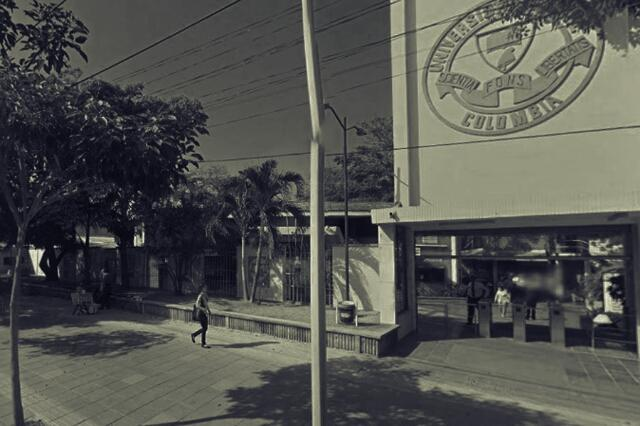

Los Muertos de la Universidad Libre de Barranquilla
Lugares Misteriosos / Sucesos históricos y casos paranormales

La historia
Durante el Carnaval de Barranquilla de 1992, mientras la ciudad se preparaba para disfrutar de sus tradicionales fiestas, un acontecimiento estremecedor interrumpió la celebración. En las instalaciones de la Universidad Libre, sede centro, ubicadas en la carrera 46 con calle 48, fueron descubiertos varios cuerpos sin vida de personas que habían sido asesinadas dentro del recinto universitario. Lo que inicialmente parecía un hecho aislado terminó revelando uno de los episodios criminales más impactantes de la historia de la ciudad.
Los hechos ocurrieron durante los días del Carnaval, cuando personas en condición de calle y recicladores frecuentaban diferentes sectores de Barranquilla en busca de materiales que pudieran recuperar y vender. Según las investigaciones, algunos trabajadores de vigilancia de la institución aprovechaban esta situación para atraer a estas personas al interior del establecimiento con la promesa de entregarles cartones, papeles y otros elementos reciclables.
Sin embargo, aquella supuesta oportunidad de conseguir materiales escondía una realidad aterradora. Una vez dentro de las instalaciones, las víctimas eran atacadas violentamente. Posteriormente, sus cuerpos eran trasladados al anfiteatro de la facultad de Medicina, donde se desarrollaban prácticas académicas con cadáveres. La investigación reveló la gravedad de los crímenes y el uso irregular de los cuerpos de personas asesinadas.
El descubrimiento de los cuerpos
Uno de los momentos decisivos de esta historia ocurrió el 29 de febrero de 1992. Ómar Enrique Hernández López, un reciclador que había ingresado a la universidad, consiguió escapar después de ser atacado. Herido y con señales de violencia, llegó hasta un puesto de Policía para denunciar lo sucedido y advertir que dentro de la institución había otras personas asesinadas.
Su testimonio permitió que las autoridades ingresaran a las instalaciones y descubrieran los cuerpos que se encontraban en el anfiteatro. Los primeros reportes periodísticos hablaron de once cadáveres hallados en la morgue universitaria. La noticia causó conmoción nacional y convirtió aquel Carnaval en uno de los más recordados por una tragedia que nada tuvo que ver con la celebración.
El caso generó una profunda indignación social. Las investigaciones judiciales señalaron la participación de trabajadores de vigilancia en los asesinatos. Con el tiempo se conocieron más detalles sobre las víctimas, muchas de ellas personas vulnerables que vivían del reciclaje y que no contaban con redes familiares o sociales que facilitaran su identificación.
Una investigación que dejó muchas preguntas
El caso fue conocido popularmente como la matanza de la Universidad Libre. La investigación judicial permitió establecer responsabilidades individuales y condujo a condenas contra cinco personas por hechos relacionados con estos crímenes. La propia institución universitaria fue reconocida como víctima de los acontecimientos, pues sus instalaciones fueron utilizadas por trabajadores para cometer los delitos.
Años después, el trabajo del Instituto Nacional de Medicina Legal permitió reconstruir los posibles rostros de algunas víctimas mediante técnicas forenses. En 2010, se conoció que se habían elaborado representaciones de los rostros de al menos quince personas relacionadas con el caso y otros registros de cadáveres sin identificar, con la esperanza de que sus familiares pudieran reconocerlas.
Detrás de las cifras y los titulares existían historias familiares que quedaron interrumpidas. Algunas personas desaparecieron sin que sus seres queridos supieran durante años qué había ocurrido. En 2019, el periódico El Heraldo publicó la historia de las hermanas Corbacho, quienes continuaban buscando los restos de su hermano Héctor Daniel, una de las víctimas de aquellos acontecimientos.
Entre la tragedia y el misterio
Con el paso del tiempo, la historia de la matanza también comenzó a formar parte de los relatos oscuros asociados a la antigua sede universitaria. La naturaleza de los acontecimientos, los espacios donde fueron encontrados los cuerpos y el recuerdo de las víctimas han alimentado el imaginario popular alrededor de este lugar.
Algunas narraciones sobre lugares marcados por tragedias hablan de presencias, ruidos extraños y sensaciones inexplicables. Sin embargo, no existen pruebas verificadas que permitan afirmar que en la Universidad Libre hayan ocurrido apariciones sobrenaturales relacionadas con estos asesinatos. Es importante distinguir entre los hechos documentados y las interpretaciones populares que surgieron posteriormente.
La historia de los muertos de la Universidad Libre no es solamente un relato de misterio. Es también un recordatorio de las vidas de personas que fueron víctimas de una violencia extrema y cuya memoria merece ser preservada. Detrás de aquel episodio quedaron preguntas, familias en búsqueda de respuestas y una ciudad que todavía recuerda uno de los capítulos más dolorosos de su historia.
Fuentes
El Heraldo. (2017). La matanza que enlutó el Carnaval de 1992.
Consultar reportajeEl Tiempo. (2010). Indigentes muertos en una universidad ya tienen rostro.
Consultar reportajeEl Heraldo. (2019). El largo camino de las Corbacho para tener los restos de Héctor.
Consultar reportajeEl Heraldo. (2024). El Judicial Pódcast: Recuento de las muertes en la morgue de la Universidad Libre de Barranquilla.
Consultar y escuchar pódcastEl Tiempo. (1992). Alumnos de Medicina, los chivos expiatorios.
Consultar archivo periodístico